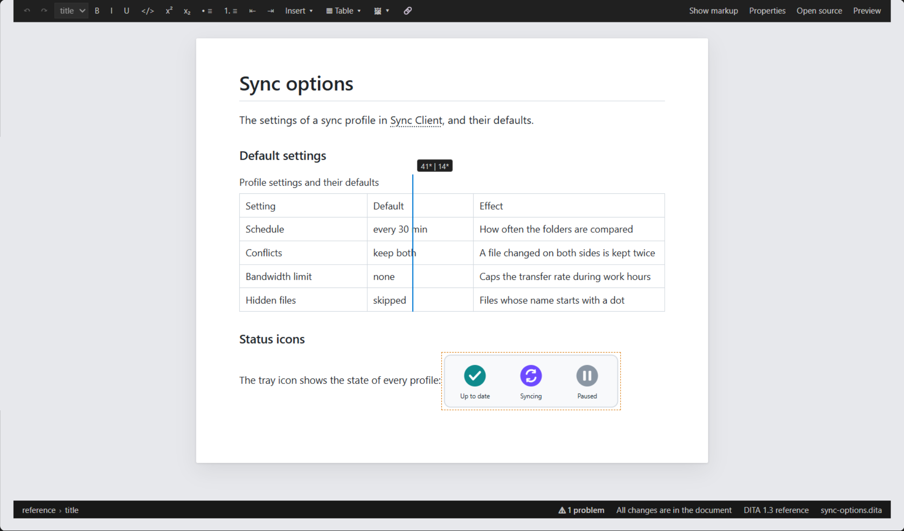

Tables in the Visual Editor
Insert and edit CALS and simple tables on the page: rows, columns, merged cells and column widths, with the table markup kept consistent for you.
Table Commands
Table in the toolbar inserts a CALS table with a header row and column specifications. With the cursor in a cell, the same menu — and Table in the right-click menu — edits the table:
| Command | What it writes |
|---|---|
| Insert row above / below | A row with one cell per free column; a cell spanning rows across the new
row grows (morerows) |
| Delete row | The row; spans into it shrink, a span starting in it moves to the next row |
| Insert column left / right | A cell in every row, a new <colspec>, and
@cols + 1; a span across the new column widens |
| Delete column | The cells of the column, its colspec, and @cols −
1 |
| Merge right / down | One cell spanning both (namest/nameend
or morerows), contents joined |
| Split cell | A merged cell becomes one cell per slot again |
| Header row on/off | The first body row becomes the header row (thead), or
back |
Tab and Shift+Tab move to the next and
previous cell; Tab in the last cell adds a row. Simple tables
(simpletable) work the same way, with
@relcolwidth following column changes. A command that would break
the table is not offered. Rows and cells a command does not change are written back
as they were.
Column Widths
Tables show their column widths (colspec/@colwidth, or a simple
table's @relcolwidth). Drag the border between two columns to move
width from one to the other: a guide shows the two new widths; release to set them
(Escape cancels, Ctrl+Z undoes).

- Proportional widths are written as whole numbers out of 100
(
30*,70*); a table whose proportions do not add up to 100 has them rewritten that way the first time. - Fixed widths (
50pt,2cm…) keep their unit. - A CALS table without colspecs gets them.